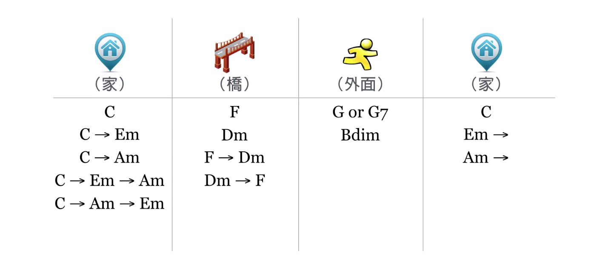

4.2 编配和声进行
编配要求：
- 和弦与旋律音要协和。和弦与旋律音搭配后，旋律音可能是和弦内音或和弦外音。和弦内音一定是协和的，和弦外音可以简单地在听觉上判断是否是协和的。
- 和声进行的良好性。即每一级和弦的功能以及其前后连接是否正确，总的特点是
稳定 — 不稳定 — 稳定，具体表现为主 — 下属 — 属 — 主的功能序列。详细说明如下：
主功能组和弦: VI, I, III，代表着开始、结束、完成了，有一种「家」的感觉；
下属功能组和弦: II, IV, VI，代表着跨出一步，有一种「桥」的感觉；
属功能组和弦: III, V, VII，代表着不稳定、未完成，有一种「外面」的感觉。
这样，和声进行就应该是由主功能组和弦开始，接下属功能组，再接属功能组，再接主功能组。
例如 C 调下，各个和弦归类与连接可以如下图，排列组合可以获得一百多条不同的和声进行：
